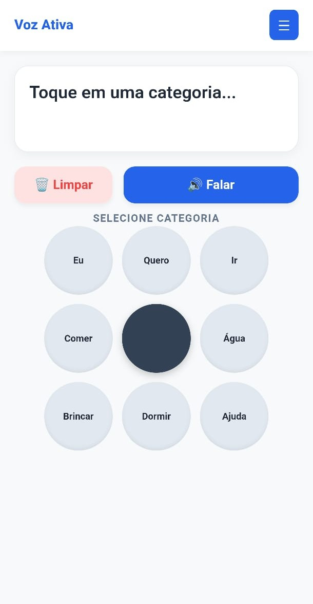

Menu radial
Empurre o cursor em uma direção para escolher a próxima palavra.
CAALL · COMUNICAÇÃO ALTERNATIVA E AUMENTATIVA PARA TODOS
Comunique o que você precisa, palavra por palavra, com o Voz Ativa.
A Comunicação Aumentativa e Alternativa reúne ferramentas e estratégias que apoiam pessoas com dificuldades na linguagem oral.
O Voz Ativa leva a CAA para o celular, de forma rápida e intuitiva.
Mais autonomia para expressar
necessidades, ideias e escolhas.
Recursos simples para transformar escolhas em comunicação.
Empurre o cursor em uma direção para escolher a próxima palavra.
A direção escolhida atualiza as palavras disponíveis para continuar a frase.
Ouça a frase em voz alta; limpe para começar outra.
Eu, Quero, Ir, Comer, Água, Brincar, Dormir e Ajuda organizam as opções do menu.
Veja como o Voz Ativa organiza palavras e categorias para apoiar a comunicação no dia a dia.

O plano reúne desenvolvimento, design e a participação de pessoas usuárias e profissionais de apoio.
Organização e acompanhamento
Aplicativo, interface e experiência
Contribuições de áreas relacionadas
Testes e consultoria da experiência